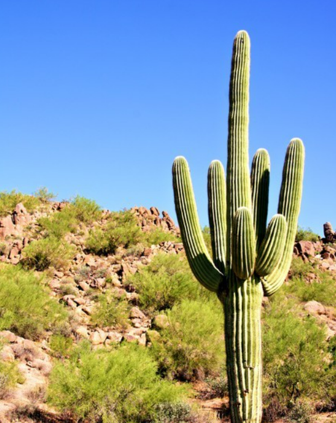

Die Wüste ist einer der trockensten Orte der Welt, trotzdem entscheiden sich einige Pflanzen dort zu leben. Es ist ein ständiger Überlebenskampf. Die Sonne scheint den ganzen Tag durch, die Temperaturen sind hoch und Schatten ist dort ein Fremdwort. Die Pflanzen benutzen tolle Überlebenstechniken und haben alle Ihre eigenen Methoden entwickelt
Rose von Jericho
Die Rose von Jericho. Sie kommt in Isreal, Jordanien und Teilen von Nordafrika vor. Diese Pflanze trocknet sich selbst aus um in der Wüste zu überleben. Sie wird auch Wüstenrose genannt. Sie haben Behaarte Blätter und sehen eigentlich aus wie tod. Die Pflanze ist faszinierend und einzigartig.
Rose von Jericho
Kaktus
Kakteen kennt jeder und jeder hat eins in seinem Zimmer stehen. Sie überleben alles und haben bekanntlich Stachen. Kakteen gibt es tausend unterschiedliche und die Stacheln schützen Sie von Fressfeinden. Kakteen haben auch eine Blühzeit und Sie sind Meister im Wasserspeichern.

Kaktus
Welwitschia
Die Weltwitschie Pflanze ist aus der Gattung Welwitschia. Sie ist eine der ältesten Pflanzen der Welt. Rund über 110 Millionen Jahre alt. Sie wird auch einer der ältesten Pflanzen der Welt. Sie kann mehrer hundert Jahre alt werden und die älteste bekannt ist 2000 Jahre alt. Sie kann riesig werden aber sieht nicht sehr schön aus. Trotz allem ist sie auf dem Nationalwappen von Namibia drauf.